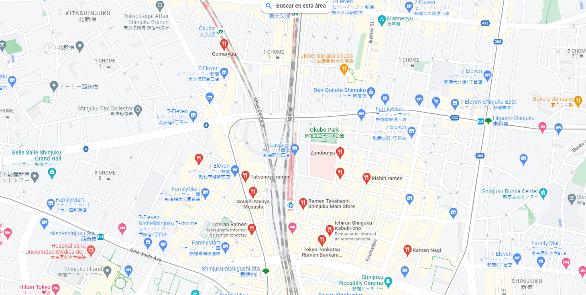

Ramen House

Ramen Shoyu
Sopa de pollo con pasta de soya, servido con cebolla, ajo, champiñones y cilantro
Ver receta
:max_bytes(150000):strip_icc()/Tonkotsu-Ramen-FT-BLOG1122-8fe6c12d609a4fd4ab246bea3aae140e.jpg)


Menú
| Plato de Ramen | Descripción | Precio |
|---|---|---|
| Ramen Shoyu | Sopa de pollo con pasta de soya, servido con cebolla, ajo, champiñones y cilantro | $12.00 |
| Ramen Miso | Sopa de miso con tiras de puerco, zanahoria, repollo y cebolla | $14.00 |
| Ramen Tonkotsu | Sopa de hueso de cerdo con tiras de cerdo, cebolla y bok choy | $16.00 |
| Ramen Shio | Sopa salada de pollo con tiras de puerco, zanahoria y cebolla | $13.00 |
| Ramen Spicy | Sopa picante con tiras de puerco, zanahoria, repollo y cebolla | $15.00 |
| Ramen Vegetariano | Sopa de verduras con tofu, zanahoria, repollo y champiñones | $10.00 |
| Ramen de Mariscos | Sopa de mariscos con camarones, calamares y almejas | $18.00 |
| Ramen de Pato | Sopa de pato con tiras de pato asado y cebolla bok choy | $20.00 |
| Ramen de Cerdo con Maní | Sopa de cerdo con maní, con tiras de cerdo, zanahoria, repollo y maní | $16.00 |
| Ramen de Pollo y Erizos | Sopa de pollo con tiras de pollo asado, erizos, cebolla y bok choy | $18.00 |
Ubicación
Estamos ubicados en Japón, 〒160-0023 Tokyo, Shinjuku City, Nishishinjuku, 7 Chome−4−5 冨士野ビル 1F
